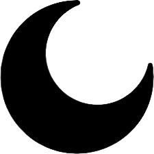

tldr pages
Simplified and community-driven man pages.


The tldr pages are a community effort to simplify the beloved man pages with practical examples.

Try the live demo below, have a look at the PDF version, or follow the installation instructions.
§ Installation
As of now, our most mature client is the Python one, which you can easily install via pipx:
pipx install tldr
There are many more clients that have sprouted from the community, including:
- command-line clients.
- GUI clients for desktop and mobile.
- web-based clients.
- clients which integrate with other applications.
§ Contributing
This repository is an ever-growing collection of examples for the most common UNIX, Linux, macOS, SunOS, Android and Windows commands.
You're encouraged to create or edit pages
in the pages/ folder
at the project's repository
and submit a pull request.
Just keep in mind the Contributing guidelines.